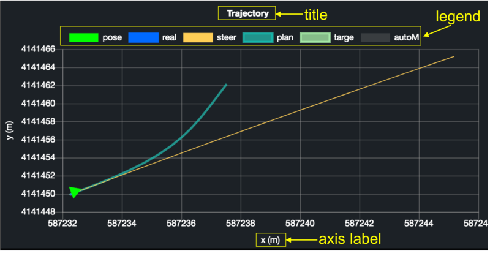
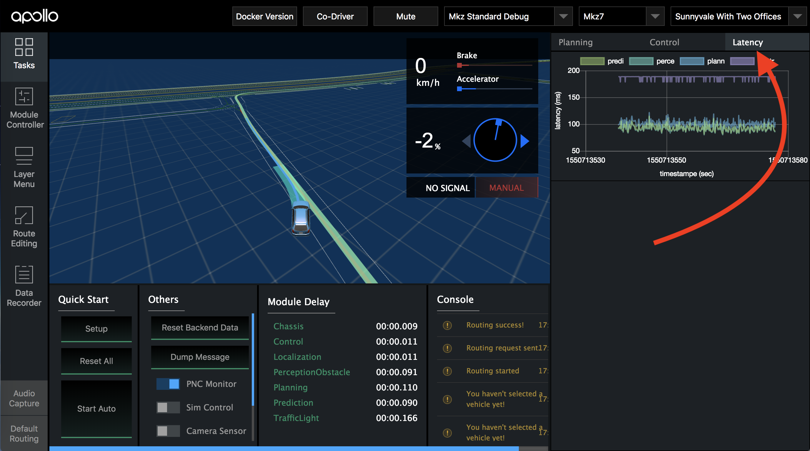

Dreamview Usage Table
Dreamview is a web application that,
visualizes the current output of relevant autonomous driving modules, e.g. planning trajectory, car localization, chassis status, etc.
provides human-machine interface for users to view hardware status, turn on/off of modules, and start the autonomous driving car.
provides debugging tools, such as PnC Monitor to efficiently track module issues.
Layout and Features
The application layout is divided into several regions: header, sidebar, main view, and tool view.
Header
The Header has 3 drop-downs that can be set as shown:

The Co-Driver switch is used to detect disengagement event automatically. Once detected, Dreamview will display a pop-up of the data recorder window for the co-driver to enter a new drive event.
Depending on the mode chosen from the mode selector, the corresponding modules and commands, defined in hmi.conf, will be presented in the Module Controller, and Quick Start, respectively.
Note: navigation mode is for the purpose of the low-cost feature introduced in Apollo 2.5. Under this mode, Baidu (or Google) Map presents the absolute position of the ego-vehicle, while the main view has all objects and map elements presented in relative positions to the ego-vehicle.
Sidebar and Tool View
 Sidebar panel controls what is displayed in the tool view described below:
Sidebar panel controls what is displayed in the tool view described below:
Tasks
All the tasks that you could perform in DreamView:

Quick Start: commands supported from the selected mode. In general, setup: turns on all modules
reset all: turns off all modules
start auto: starts driving the vehicle autonomously
Others: switches and buttons for tools used frequently
Module Delay: the time delay between two messages for each topic
Console: monitor messages from the Apollo platform
Module Controller
A panel to view the hardware status and turn the modules on/off

Layer Menu
A toggle menu for visual elements displays.

Route Editing
A visual tool to plan a route before sending the routing request to the Routing module

Data Recorder
A panel to report issues to drive event topic (“/apollo/drive_event”) to rosbag.

Default Routing
List of predefined routes or single points, known as point of interest (POI).

If route editing is on, routing point(s) can be added visually on the map.
If route editing is off, clicking a desired POI will send a routing request to the server. If the selected POI contains only a point, the start point of the routing request is the current position of the autonomous car; otherwise, the start position is the first point from the desired route.
To edit POIs, see default_end_way_point.txt file under the directory of the Map. For example, if the map selected from the map selector is “Demo”, then default_end_way_point.txt is located under modules/map/data/demo.
Main view:
Main view animated 3D computer graphics in a web browser.

Elements in the main view are listed in the table below:
Visual Element |
Depiction Explanation |
|---|---|
|
|
|
|
|
|
|
|
|
|
|
|
|
|
|
|


Obstacles
Visual Element |
Depiction Explanation |
|---|---|
|
|
|
|
|
|
|
|
|
|
|
|
|
The yellow text indicates:
|
|
|


Planning Decision
Decision Fence
Decision fences reflect decisions made by planning module to ego-vehicle (main) and obstacles (objects). Each type of decision is presented in different color and icon as shown below:
Visual Element |
Depiction Explanation |
|---|---|
|
|
|
|
|
|
|
|
|
|


Changing lane is a special decision and hence, instead of having decision fence, a change lane icon shows on the autonomous car:
Visual Element |
Depiction Explanation |
|---|---|
|
|
|
|


When a yield decision is made based on the “Right of Way” laws at a stop-sign intersection, the obstacles to be yielded will have the yield icon on top:
Visual Element |
Depiction Explanation |
|---|---|
|
Obstacle to yield at stop sign |

Stop reasons
When a STOP decision fence is shown, the reason to stop is displayed on the right side of the stop icon. Possible reasons and the corresponding icons are:
Visual Element |
Depiction Explanation |
|---|---|
|
|
|
|
|
|
|
|
|
|
|
|
|
|
|
|
|
|
|
|
|
|
|
|


Point of View
Main view that reflects the point of view chosen from Layer Menu:
Visual Element |
Point of View |
|---|---|
|
|
|
|
|
|
|
Map
|


Shortcut Keys
Shortcut Keys |
Description |
|---|---|
1 |
Toggle Task panel |
2 |
Toggle Module Controller panel |
3 |
Toggle Layer Menu panel |
4 |
Toggle Route Editing panel |
5 |
Toggle Data Recorder panel |
6 |
Toggle Audio Capture panel |
7 |
Toggle Default Routing panel |
v |
Rotate Point of View options |
PnC Monitor
To view the monitor:
Build Apollo and run Dreamview on your web browser
Turn on the “PNC Monitor” from the ‘Others’ panel.
On the right-hand side, you should be able to view the Planning, Control, Latency graphs as seen below

Planning/Control Graphs
The Planning/Control tab from the monitor plots various graphs to reflect the internal states of its modules.
Customizable Graphs for Planning Module
planning_internal.proto is a protobuf that stores debugging information, which is processed by dreamview server and send to dreamview client to help engineers debug. For users who want to plot their own graphs for new planning algorithms:
Fill in the information of your “chart” defined in planning_internal.proto.
X/Y axis: chart.proto has “Options” that you could set for axis which include
min/max: minimum/maximum number for the scale
label_string: axis label
legend_display: to show or hide a chart legend. 
Dataset:
Type: each graph can have multiple lines, polygons, and/or car markers defined in chart.proto:
Label: each dataset must have a unique “Label” to each chart in order to help dreamview identify which dataset to update.
Properties: for polygon and line, you can set styles. Dreamview uses Chartjs.org for graphs. Below are common ones:
Name
Description
Example
color
The line color
rgba(27, 249, 105, 0.5)
borderWidth
The line width
2
pointRadius
The radius of the point shape
1
fill
Whether to fill the area under the line
false
showLine
Whether to draw the line
true
Refer to https://www.chartjs.org/docs/latest/charts/line.html for more properties.
Sample: You could look into on_lane_planning.cc for a code sample.
{kind=link}
{kind=link}
{kind=link}
{kind=link}
Additional Planning Paths
For users who want to render additional paths on dreamview 3D scene, add the desired paths to the “path” field in planning_internal.proto. These paths will be rendered when PnC Monitor is on:

Dreamview has predefined styles for the first four paths:
Properties |
Path 1 |
Path 2 |
Path 3 |
Path 4 |
|---|---|---|---|---|
width |
0.8 |
0.15 |
0.4 |
0.65 |
color |
0x01D1C1 |
0x36A2EB |
0x8DFCB4 |
0xD85656 |
opacity |
0.65 |
1 |
0.7 |
0.8 |
zOffset |
4 |
7 |
6 |
5 |
If you have more than four paths to render or want to change the styles, edit the planning.pathProperties value in dreamview/frtonend/dist/parameters.json .
Latency graph
The graph displays the difference in time when the module receives sensor input data to when it will publish this data. 
The Latency Graph can be used to track the latency each individual faces. The graphs are coloured differently to help distinguish the modules and a key is included for better understanding. The graph is plotted as Latency measured in ms vs Timestamp measure in seconds as seen in the image below.